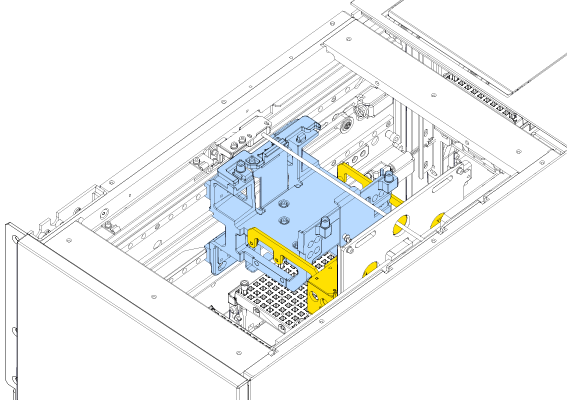
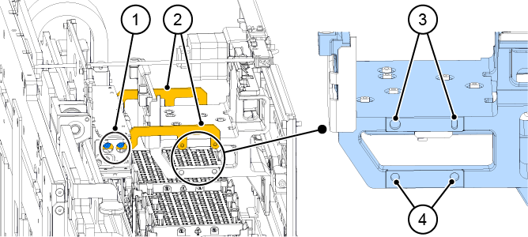

Adjusting and Aligning the DispoTip Stocker Angular Arm
This topic includes information about how to adjust and align the DispoTip Stocker angular arm.
Safety Reminder
Servicing the DxI 9000 instrument involves potential risks for pinch and puncture, electrical shock, and exposure to hazardous materials. You must mitigate these risks by taking appropriate countermeasures. See
Safety for more information.
Prerequisites
Before you begin this alignment procedure:
If you must make changes to the instrument's hardware, you must complete those changes before you prepare the instrument for adjustments and alignments.
You must verify that alignments have previously been completed on the instrument. To verify, in the Machine Control App go to
Menu > Prototype Alignment to open the Prototype Alignment page and to verify the
Finalize Instrument Alignments button is
GRAY in color. If the button is
BLUE in color, do not complete this procedure. Instead, you must first complete manual alignments.
The Tray Gripper Must Be in the Home Position
Before you adjust and align DispoTip Stocker components, the tray gripper must be in the home position. See
Homing the Tip Tray Gripper for more information.
Note: The Y and Z axes for the tray gripper are measured in
horizontal steps and
vertical steps.
A
horizontal step is a unit of distance understood by the Machine Control App and the instrument hardware and software. The gripper moves up and down along the horizontal (Y) axis approximately 1 cm (0.39 in.) for every 167 horizontal steps.
A
vertical step is a unit of distance understood by the Machine Control App and the instrument hardware and software. The gripper moves up and down along the vertical Z-axis approximately 1 cm (0.39 in.) for every 148 vertical steps.
The number of trays and tips will influence movement and distance.
Note: The tray gripper must not collide with other components of the DispoTip Stocker or the cabinet. A collision will damage or misalign the tray gripper.
Adjusting and Aligning the DispoTip Stocker Angular Arm
Perform this procedure to adjust and align the DispoTip Stocker angular arm.
If the instrument is in a
GREEN (Ready) status, in the Console App select the
SYSTEM RUNNING button and go to
Stop > Pause to enter the instrument into a
YELLOW (Paused) status.
In the Console App go to
Menu > Tools > Diagnostics > Service Diagnostics.
Select
Start Session to enter the instrument into a
BLUE (Maintenance) status.
Go to
Disposable Tip Supply Diagnostics Menu > Tray Gripper Diagnostics to open the Tray Gripper Diagnostics page.
Figure 118: Tray Gripper Diagnostics
Verify the tray gripper arms are open. If they are not open, select
Gripper Arm Moves.
Select
Mechanical Initialize. Wait for the DispoTip Stocker to initialize.
Select
Tray Gripper Angles and wait for the tray gripper to move into position.
Select
Gripper Arm Moves. The tray gripper arms will close onto the reference holes of the tip supply carriage.
Figure 119: Tip supply angle arms closed in reference holes (top view)

Note: During the remainder of this procedure, do not move the tray gripper assembly unless you are instructed to do so.
Use a 3mm driver to loosen the two screws on each tray gripper arm.
If you are replacing the tray gripper arms, do it now. Otherwise, do not remove the screws. In both cases, the arms should move freely.
Insert the tip of each tray gripper arm into the reference holes. Note that each arm is pinned but adjustable on its horizontal axis.
While adjusting the arms, toggle
Gripper Arm Moves to open and close the arms a few times to be sure the arms fit without impedance.
With the tray gripper arms in the reference holes, slowly tighten the screws to secure the gripper arms.
Figure 120: Tip supply angle arms (side view of tip supply carriage reference and alignment holes)

1
Screw (x2) - same on other side
2
Gripper arms
3
Reference holes for assembly
4
Holes for auto-alignment
Select
Gripper Arm Moves to open and close the arms multiple times. Watch to be sure the arms enter the reference holes without binding.
Note: If you are replacing the tray gripper arms, you must adjust, set, and secure the arms into position before you perform automated alignment procedures.
Note: After you complete this procedure, do not adjust the tray gripper arms. All other alignment positions will adjust in reference to the arm positions.
Ending an Adjustments and Alignments Session
In the Console App go to
Menu > Tools > Diagnostics > Service Diagnostics.